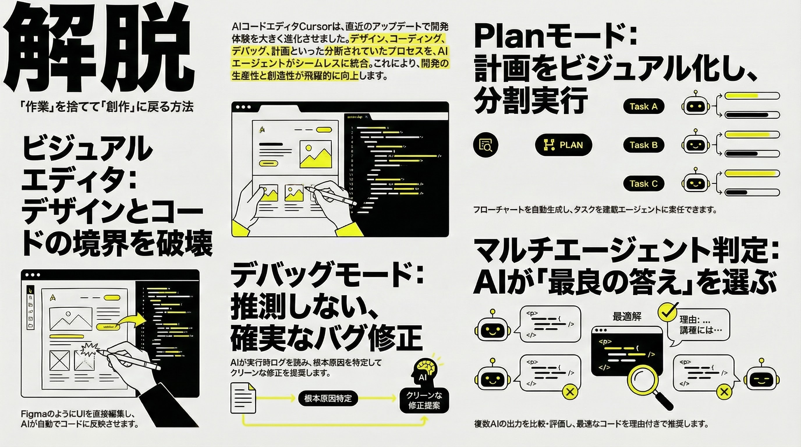

Cursor Visual Editorが描く未来：デザインとコードの壁が溶ける日
もう、デザインとコードで迷わない
「エディタで書いて、ブラウザで確認して、微調整して...」そんな非効率なループは終わります。 Cursor Visual Editorは、目の前のWebサイトを直接操作し、裏側でAIにコードを書かせる、全く新しい開発体験への招待状です。
✨ 体験を変える3つの魔法
- ✋ 見て、動かす (Drag & Drop)： ボタンやセクションをマウスで掴んで移動。パワポ感覚でレイアウト変更が可能。
- 🎨 触って、仕上げる (Visual Control)： Figmaのようなパネルで余白や色を調整。繊細な感覚をそのまま反映。
- 🗣️ 指さして、話す (Point & Prompt)： 要素をクリックして「これを赤にして」と言うだけ。AIが裏でコードを書き換え。
働き方はどう変わる？
役割の融合
デザイナーが実装を直接いじり、エンジニアが瞬時にプロトタイプを作る。「デザインエンジニア」の時代へ。
思考のシフト
仕事は「タイピング」から「AIの指揮(Directing)」へ。人間はより高度な設計やアイデア創出に集中。
スピード革命
「コンテキストの切り替え」による中断が消滅。思考が一直線にゴールへ向かうフロー状態を実現。
Q. Figmaはもう要らない？
結論：「役割が違う」。現時点では、以下のように使い分けるのが最適解です。
| ツール | 役割と目的 |
|---|---|
| Figma |
「自由なキャンバス」 0→1のデザイン案出し。制約のない状態でアイデアを探る場所。 |
| Cursor |
「精密な手術台」 実装後の微調整。本物のコードをベースに完璧に磨き上げる場所。 |